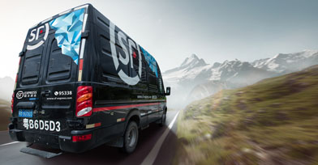
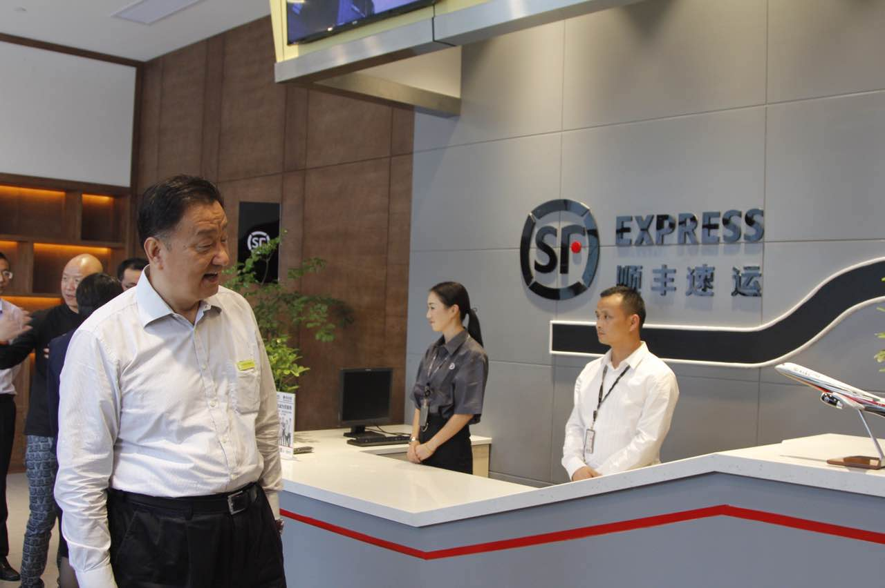
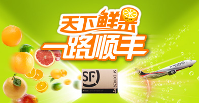

-
 医疗行业
医疗行业新疆生物制品需求告急！顺丰冷运4天3夜配送完毕
2017年3月，顺丰冷运北京分公司接到北京北生研生物制品有限公司（原北京天坛生物制品股份有限公司，以下简称“北生研”）的生物制品运输通知，需要分批次运输约...
查看详情 - 
-
 快消行业
快消行业顺丰客户服务案例——周黑鸭
为了给客户最优质的服务体验，周黑鸭联手顺丰冷运，开展冷运到家业务的推广，2016年双十一期间，顺丰承接了周黑鸭全部订单，7天内完成60万单配送，带给客户最新鲜健...
查看详情 -

快消行业
顺丰+谢裕大：古老茶叶的互新思路
谢裕大茶文化博物馆是由谢裕大茶叶股份有限公司建立（以下简称“谢裕大”），建筑面积7000平方米，集旅游、文化展览、销售、科研与一体。而在博物馆内设立的顺丰...
查看详情 -
 医疗行业
医疗行业赛诺菲&顺丰冷运合作 开启国内医药冷链新纪元
2016年11月16日， 顺丰旗下成都顺意丰医药有限公司与赛诺菲在成都举行盛大合作启动仪式。双方领导在启动仪式上均表达了对此次合作的衷心祝福，并希望在顺丰...
查看详情 -
 3C电子行业
3C电子行业手机新品首发，顺丰为您保驾护航
每年的手机新品首发都是粉丝们的狂欢，但新品首发对物流配送要求非常严格，顺丰作为某国际领先手机品牌的承运商，如何快速将新品快速、准确、安全的寄递到消费者手中...
查看详情
-
 生鲜行业
生鲜行业蟹闯天下 顺丰领鲜
2016年7月27日，顺丰在苏州阳澄湖畔举办2016年大闸蟹行业解决方案发布会。现场嘉宾云集，当地政府、行业协会以及阳澄湖蟹农蟹商共同参与了此次盛宴，见证...
查看详情 - 